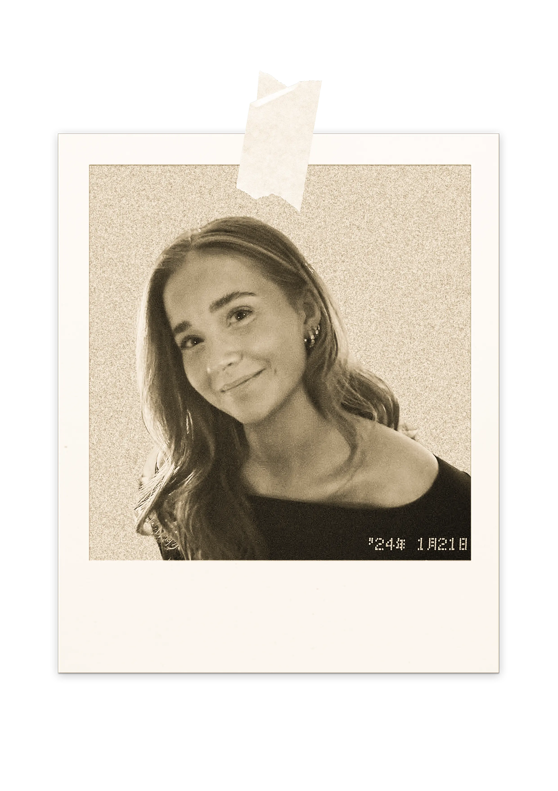

Om mig
Hej, mit navn er Sofie!
Jeg er 23 år gammel, og har de sidste to år boet i min lille lejlighed i Valby. Efter knap fire sabbatår med arbejde og en masse skønne rejser, startede jeg i januar måned på mit første semester af Multimediedesign på EK. Inden jeg
startede studie gik jeg et halvt år på højskole, hvor jeg havde hovedfaget Design & Maker. Jeg har altid elsket at være kreativ, så det var en linje lige for mig!
Min uddannelse:
- HHX fra Niels Brock Innovationsgymnasiet (2019 - 2022)
- Design og Maker på Vallekilde Højskole
(aug. 2025 - dec. 2025) - Multimediedesign (jan. 2026 - dec. 2027)

Erhvervserfaring
Scroll dig igennem min erfaring!
Hvad har jeg fået ud af mit første semester?
Først og fremmest har jeg fået en grundlæggende forståelse for hvad uddannelsen indeholder, og hvad den kan bruges til fremadrettet.
Jeg har fået en grundlæggende forståelse for kodning herunder HTML, CSS og JavaScript. Jeg
har lært at afkode en lang række kodestykker samt selv at strukturere dem. Jeg har lært at lave responsive sites, så løsningerne fungererer på flere formater. I forlængelse heraf har jeg fået kendskab til programmerne GitHub og VS code.
Jeg har fået en grundlæggende forståelse for designprincipper herunder Gestalt-lovene, visuelt hieraki, visuelt flow og farveteori samt en overordnet forståelse for grafisk kommunikation vha. CRAP og AIDA-modellen.